Published April 8, 2026
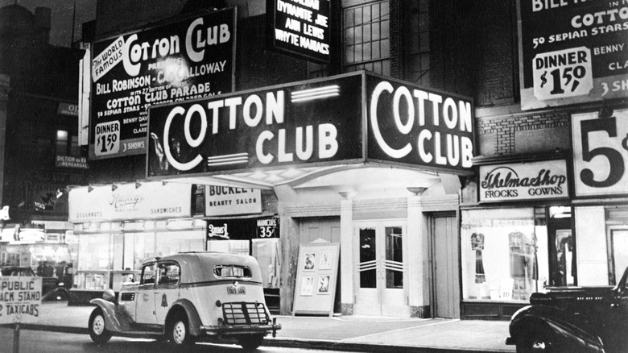
This is a story about several musicians and their attempts to make music more interesting. It begins in Harlem in the late 1930s.
New York was filled with jazz clubs and speakeasies. Here is a map specifically for night clubs:
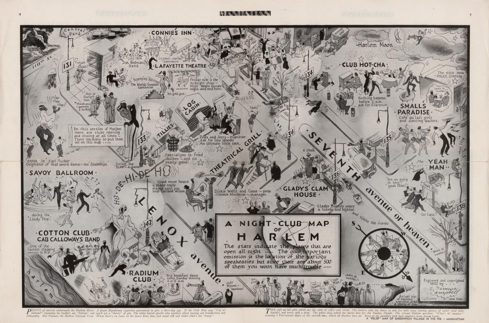
The boom in swing had been good for musicians. There was money to be made playing ballrooms and American audiences were buying tickets.
But there was also a growing sense that their evenings working these bands was being spent performing a version of themselves and their music that had been edited for someone else's commfort. It was as if they were watching the swing music that they had invented become one of the most commercially successful art forms in the world, while the people who actually pioneered it were not benefiting from its financial success and were being forced to restrain their creativity on stage to deliver entertainment for a white American audience. The bandleaders who employed them, whether black or white, answered to a market that now wanted dancing and predictability, without any of the artistic disruption that might threaten ticket sales.
In other terms, what they began to notice was that they had somehow mangaged to become enslaved within their own music.
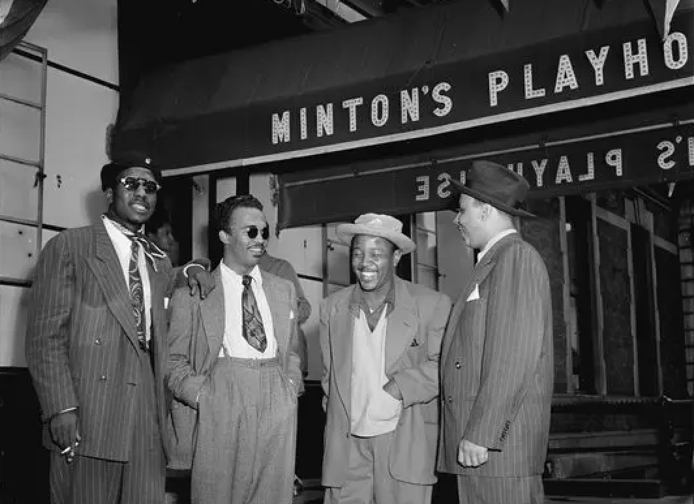
So when they clocked off, several of the more ambitious and frustrated players would gather after hours at Minton's Playhouse where they would loosen their ties and play at tempos no dancer could follow. They took the forms of the same popular tunes they'd been playing all evening — rhythm changes, the blues, standards — and substitute the chords with changes so rapid and unexpected that even today it sounds brash. And brash was the point. It sounded deliberately the opposite of the kitch, safe swing. This was loud, fast, abrasive and aggressive music with no comparable reference for outsiders to relate to.
And what this meant was, once again, they had invented a music that belonged to them and to no one else. Since it was the deliberate inversion of what the white audiences demanded, they would hate the new style and this meant it was safe from being commercialised and tampered with, just like they had done to swing. Only the after-hours lot could relate to it. There, away form the segregation of the commercial ballrooms, they could let go and feel safe.
One of the Minton's Group put it more plainly. He said they were tired of people stealing their music.
His name was Dizzy Gillespie. Here he is with his distinctive style of playing with his cheeks puffed out:
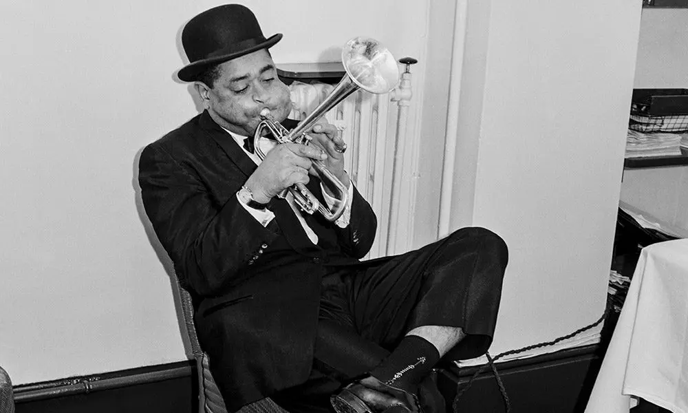
This was considered really bad technique for a trumpet player. They were supposed to keep their cheeks in when they played, but Dizzy didn't seem to care. He also didn't care that his trumpet was crooked, with the horn pointing upward. Apparently he'd sat on it once and, after giving it a play, realised he actually preferred the sound. So he kept it like that and made it his thing.
Dizzy was one of a handful of players who all believed in a clever idea. The idea was that if you made the music impossible to play without years of study, you protected it. The speed, the complexity, the deliberate obscurity of the new style were a fence, and the fence was intentional.
They knew they were too talented to be playing mind-numbing entertainment music for the rest of their careers, so they created a style that rewarded knowledge and punished ignorance. The chord progressions of the new songs were going to be so rapid and unexpected that any musician who didn't know the vocabulary would be publicly exposed within two bars. And the resulting sound of playing over those changes at such a speed was to give it the name it eventually became known by – 'bebop'.
There were two primary tools used in this operation. The first was the contrafact. The second was reharmonisation.
Gillespie took the chord changes of popular standards and wrote entirely new melodies over them, melodies of such rhythmic and intervallic complexity that the chord borrowing became unrecognisable. The new piece became its own thing entirely. This was the effect of the contrafact. You would create something completely new using only the existing framework of a well-worn song.
Out of this technique emerged many of the greatest bebop songs ever written. Donna Lee over Indiana. Hot House over What is This Thing Called Love. Ornithology over How High the Moon:
The effect was to copyright-proof the new music — you couldn't claim ownership of the changes, only the melody, so writing a new melody over existing changes was legally clean while artistically radical.
But there was a deeper logic too: by working over familiar harmonic structures and then compressing and complicating those structures beyond recognition, bebop created a private language built from public materials. You had to know both the original and the transformation to understand what was happening. It was music that required initiation.
Another of these players was Charlie Parker. Here he is looking cheeky:
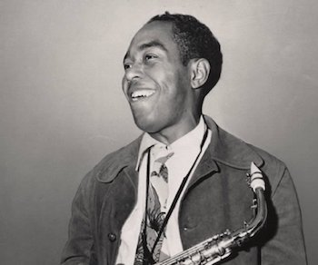
Parker took this instinct into the blues with Blues for Alice. The blues was the oldest structure in Black American music, the least likely candidate for harmonic sophistication, and precisely therefore the most pointed place to demonstrate what bebop could do. Here is the standard 12 bar blues:
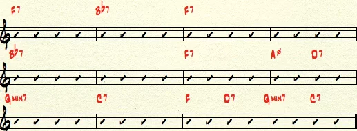
Where the standard blues sits on the I7 for four unmoving bars before going anywhere, Parker filled those bars with a descending chain of ii-V progressions falling through the relative minor toward the IV chord, like this:
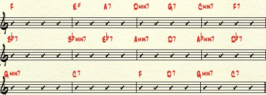
Instead of stasis, you now have continuous forward motion, four different tonal centres in the space of four bars, each one pulling urgently toward the next. The melody sits on top of all this and still sounds like a blues, still swung, still has the vernacular feel. The sophistication is underneath, structural, invisible to anyone who isn't listening for it.
What Parker had done here was take it further than just write a new melody onto existing chord changes. He had mutated the changes themselves. And this is that second primary tool of the operation we mentioned, reharmonisation.
Predictably, people hated the new music. In 1953, Parker opened for a weeklong engagement at the Latin Quarter in Montreal, a jazz club owned by Morton Berman who then fired them two days later. Here is what he had to say about them:
The patrons were disgusted and many of them thought we were pulling a gag on them by putting on some amateur talent; after they found out the truth, they felt sorry for Parker because “he was alright… but his men…“ etc. etc. Needless to say that we were terribly disappointed. Customers walked out disgusted and our business suffered during the three days we had to put up with this group.
But what they couldn't – or just didn't want to – see was that this was some of the most brilliant and technically advanced music ever created. And it represented a triumph for the musicians who had managed to assert their vision of what a better music can be.
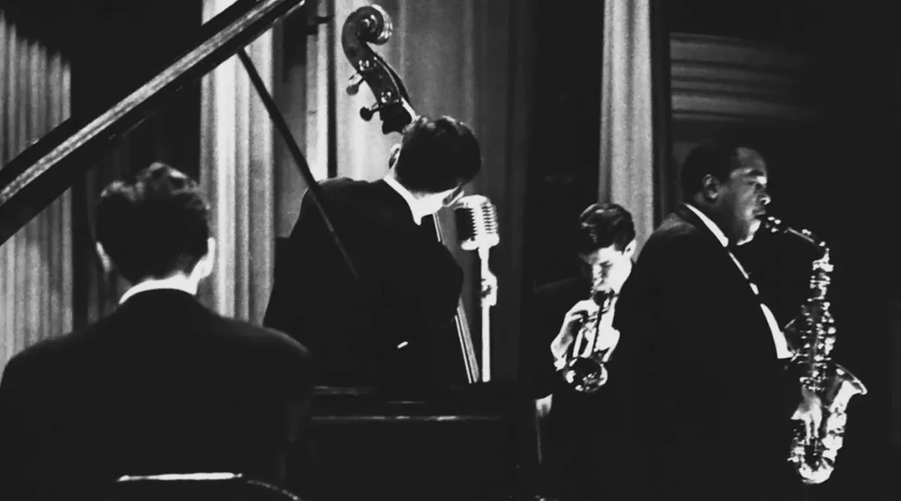
Their vision was a powerful one and soon an entire generation of saxophone players now began to copy Parker. One of those was a young Coltrane. Here is a fun video before he developed his own style and was still trying to sound like someone else.
What Coltrane was later to do was make significant advances on the harmonic acheivements of Parker. Where Parker improved on the ballad by densifying it with more ii-Vs and faster tempos, Coltrane was to make an even larger leap.
In Giant Steps and Countdown he divided the octave into three equal parts and cycled through key centres a major third apart, so that no single tonic had gravitational priority over the others. This was a further turn of the same screw: more complex, more internally logical, more completely impenetrable to anyone who hadn't done the harmonic work.
Oh, and did I mention the music got even faster?
Listen to this. At 2:54 it's the piano player's turn for a solo and, as usual with jazz recordings, he sight reads the song on the day. Hence why he struggles to keep up and has to give up his solo early on. This was, and remains, a tune that all musicians fear.
With this record, Coltrane pushed reharmonisation further even than Parker. Countdown is Coltrane's contrafact of the song Tune Up, but over the ii, V and I he does something remarkable. Whereas Parker filled out the space by cycling through its related ii-Vs, Coltrane thought one step further outside of the box and cycled instead through three different key centres – all a major third apart – before arriving at the I chord. To see this, consider the following ii-V-I chord progression:
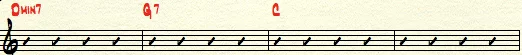
This is what Coltrane did to it:
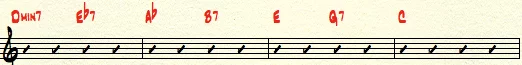
This is a different category of move. Parker accelerated within tonality. Contrane dissolved the concept of a single tonic altogether.
Instead he replaces it with three equal centres, none of which has priority over the others. Because these three tonal centres divide the octave into three equal parts, the identity of the composition's tonic can only be determined by where the piece closes. There is no gravitational centre pulling the harmony, only a cycle that eventually resolves by running out.
Coltrane's thinking has been mythologised ever since. Scholars and musicians alike have been trying to understand one diagram in particular, scribbled in a notebook of his. Several differing theories have emerged, but none agree on what it means. Here is that diagram:
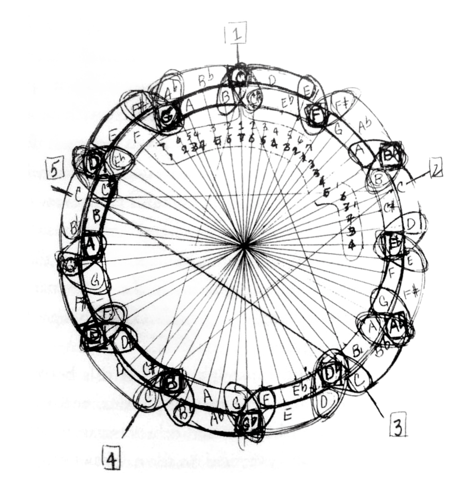
But then nobody after this made a comparable logical step with regards to reharmonisation. Jazz musicians today are still trying to assimilate Coltrane's advances in music fifty years after his death, let alone his contemporaries in the 50s.
Which brings us back to the original idea of the Minton's Group. If you make a music so advanced and so complicated that virtually no one, except a few brilliant figures can perform it, then you will have secured for yourself a style that is safe from being tampered with and destroyed. All the other jazz musicians had decided they could not top Coltrane at his own game, and that if they were going to push any more boundaries in jazz then they were going to have to take it in a different direction entirely.
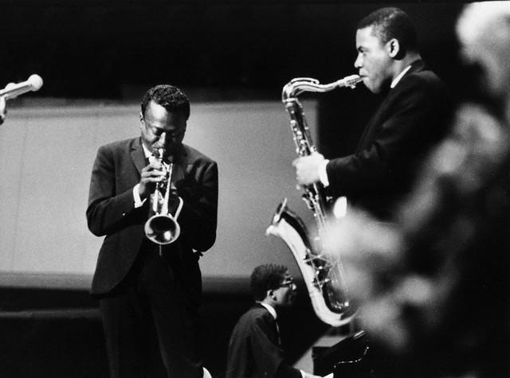
This new direction was going to be the development of non-functional harmony in jazz. The generation immediately following Coltrane — Miles Davis, Wayne Shorter, Herbie Hancock, and Chick Corea — weren't pushing Coltrane's harmonic acceleration further. Instead, they set out to do something orthogonal, treating harmony as colour rather than motion.
In Wayne Shorter's compositions, functional tonality still plays a role but it is combined with other principles of overall organisation involving varying forms of intervallic organisation and modal blues harmony, quite different from both functional tonality and Coltrane's cycle.
Shorter found a way to write tunes where the chord-to-chord logic is deliberately opaque, where changes don't resolve so much as drift, and the melody floats above changes that seem to have been chosen for their colour rather than their function.
This is a different answer to the same problem Parker identified — how do you stop harmony from being dead weight — but it abandons the ii-V as the unit of currency entirely rather than multiplying it or replacing it with cycles.
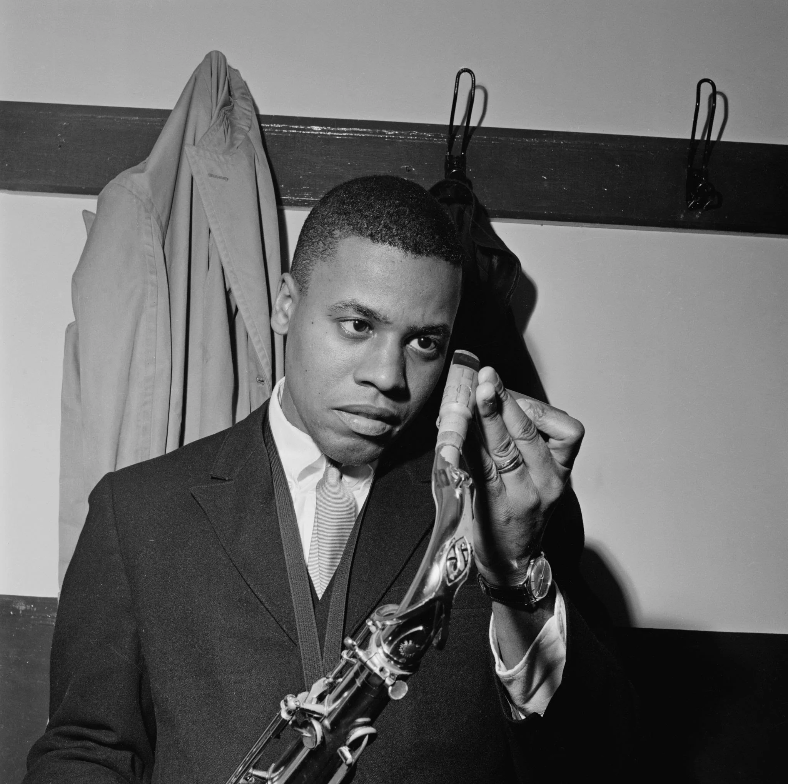
The next logical step in the Parker-Coltrane chain of harmonic acceleration turned out to lead somewhere musicians mostly didn't want to go. They had conceded the game to Coltrane and decided to change the rules instead.
The game after Giant Steps wasn't any longer to find a four-tonic system or a five-tonic system. The generation that followed made a sideways move instead, into modality and non-functional harmony, which restored space and mystery while abandoning the cyclical architecture both Parker and Coltrane had built on.
But then something funny happened. The man who had pushed jazz to a level of complexity beyond even Parker's abilities had recently became convinced that his own style was not so free of being tampered with after all. Coltrane became convinced that he was losing a hold of his own music.
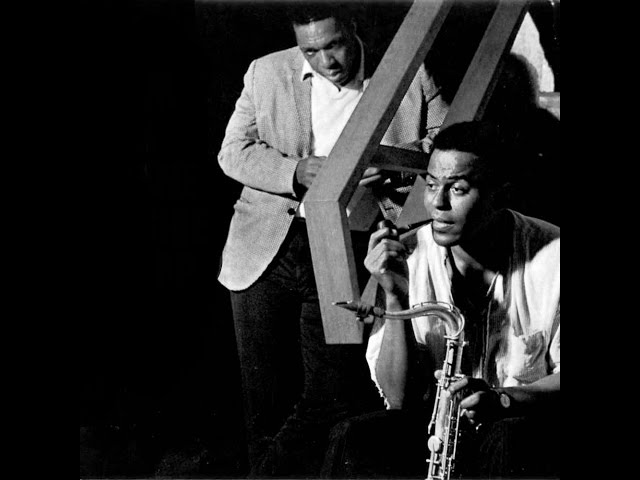
A friend of his called Archie Shepp had begun to convince him that the very framework Coltrane had been working within all along, all the chord structures and the harmonic functionality that he had pushed to the logical limits, were itself imposed on the music of African Americans by the Europeans.
These harmonic conventions did not come from Africa. They had been imported to America from European classical music and combined with the African polyrhythms that the slaves had brought with them when kidnapped en mass across the Atlantic.
Shepp had come to New York in the late 1950s. He found his way to Cecil Taylor's band and was playing with Coltrane by the early 1960s.
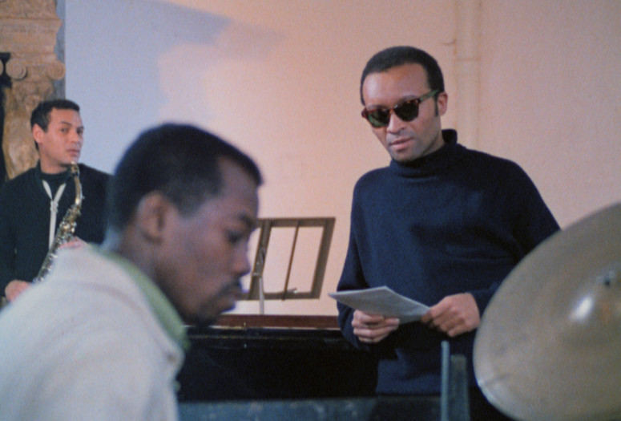
Free jazz, as Shepp himself described it, was the logical extension of things that had been intuitively at work in the minds of Parker and Coltrane.
He understood it as a continuation of the same project we have been tracing — the ongoing attempt by Black musicians to control the terms of their own music and refuse the constraints that commercial and cultural expectation placed on it. But where Parker's refusal was harmonic and Coltrane's was structural, Shepp's was explicitly and defiantly political in a way that none of the others quite were.
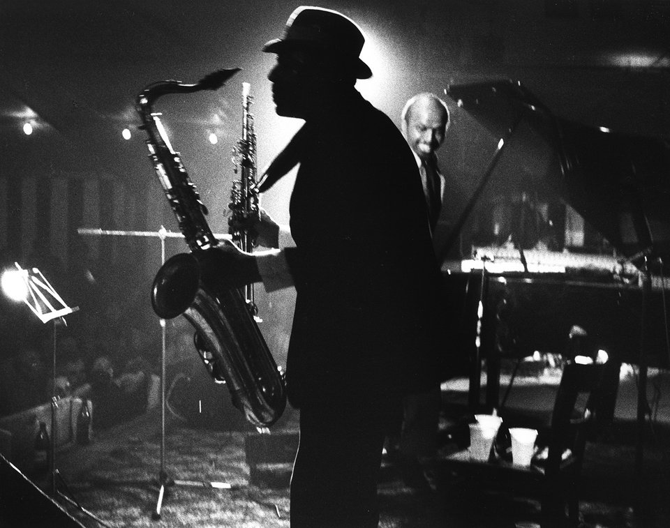
In a 1965 Downbeat article, Shepp described free jazz as a passionate music that emphasised improvisational variations in rhythm and melody while abandoning the Western elements of chords and harmony.
That phrasing is precise and should be taken seriously. What Shepp was articulating was that Western European harmonic convention — the ii-V-I, the circle of fifths, the whole apparatus of functional tonality — was not musically neutral. It was a cultural inheritance, and given who had imposed that culture on whom, it carried ideological freight. To abandon it was not merely an aesthetic decision. It was a refusal to perform within the structures of the dominant culture, the same refusal that the Minton's generation had made a generation earlier, now made explicit and named.
What was stranger however is that, even this same move had actually been anticipated by the white man. The composer Stravinsky, already 50 years before Shepp, had argued forcefully that tonal harmony had reached the point at which it had exhausted itself through its own internal logic. Here is Stravinsky having breakfast:
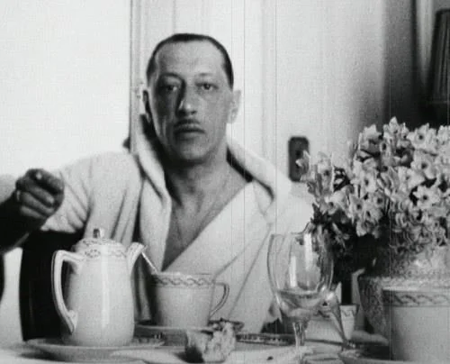
The chromatic saturation of late Wagner and early Stravinsky himself — music where every chord was so altered and so quickly moving that no key centre could establish itself — had stretched functional harmony to the point where it no longer functioned. The dominant no longer wanted to resolve to the tonic because the tonic had been undermined so thoroughly that the ear couldn't hold onto it.
His response to this in works like The Rite of Spring (1913) was to relocate the primary organising force of music from harmony to rhythm. Its chords are often relatively simple — a dominant seventh chord held for bars, an unchanging polytonal block. What makes it revolutionary is the rhythm: irregular accents, displaced metres, constantly shifting phrase lengths.
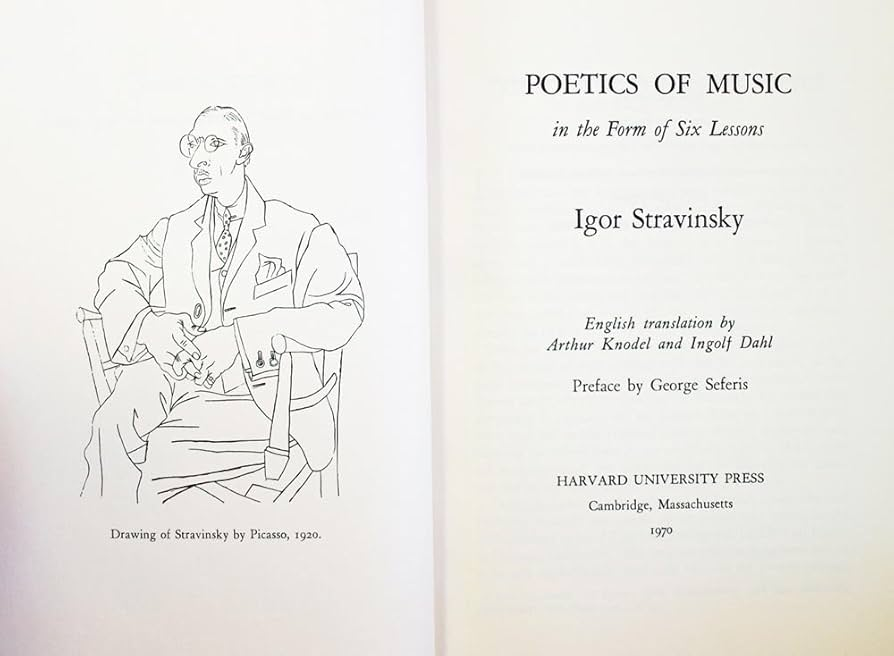
Stravinsky's argument, which he developed more explicitly over his long career, was that Western music had become enslaved to harmonic progression as the engine of musical time – that the feeling of forward motion in music, the sense of where you were going and why, had come to depend almost entirely on tonal tension and resolution.
Free music from that dependence and you freed rhythm to do structural work it had never been asked to do before. It certainly hadn't been asked yet because at his debut performance of Rite of Spring, the audience stood up and left in horror at the dissoncance of the harmony. Here is a drawing of that night, showing people throwing objects at the performers from the sidelines. Look cloesly at the puzzled face looking back in the lower stalls too, it's like a Bosch meets Where's Wally.
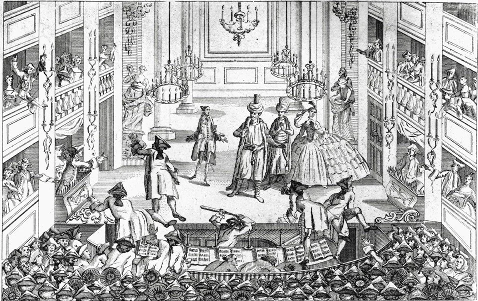
What made Shepp's revolt new a different however from Stravinsky's was the following. Stravinsky diagnosed the exhaustion of functional harmony as an internal problem of that tradition's own development. For Shepp, it presented a problem to the development of the African tradition of music.
Functional harmony was the harmonic language of European concert music, and the insistence that jazz be understood and analysed through the framework of that language was one of the mechanisms by which the music's African and African-American roots were consistently marginalised.
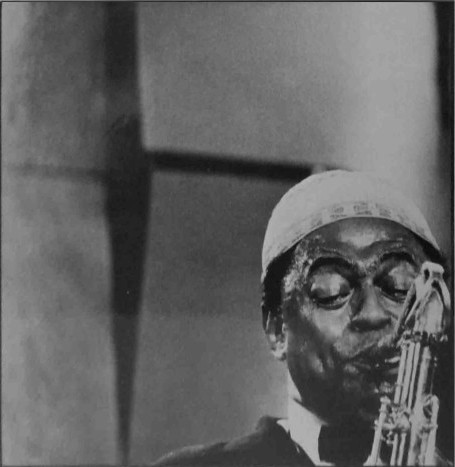
So what Coltrane had been commended for until this point, the accelerated development of harmony to a level of complexity the white man in jazz had not achieved, had revealed itself to have been contributing greater advances to the very side of jazz music which was European and not African. In developing harmony to new heights, he was unwittingly arming the white man.
And with the vantage of hindsight, scores of white middle class educated children emerge from schools called 'conservatoires' every year in London and New York trained to improvise more or less fluently over Coltrane changes like Giant Steps and Countdown. As Coltrane foresaw, the white man would eventually catch up and conquer his music.
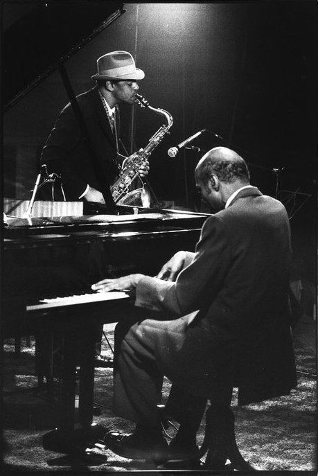
With Magic of Ju-Ju in 1967, Shepp developed freeform avant-garde saxophone lines coupled with rhythms and cultural concepts from Africa. The African rhythmic sources were not being imported for their complexity or their theoretical interest — they were being reclaimed as heritage that had always been present in the music but systematically unacknowledged.
Attica Blues in 1972 and The Cry of My People spoke directly for civil rights, combining musical and verbal statement in a way that rejected the idea that music and politics should be separate spheres. For Shepp the two had never been separate. The history of jazz, as he understood it, was the history of a people using music to survive, resist, and express what could not otherwise be said, and any theory of jazz harmony that failed to account for this history was describing the sound while missing the point.
Coltrane devoted his energy to the development of free jazz and began to produce some of strangest works.
He recorded Ascension in 1965 — a large ensemble piece of collective improvisation with almost no predetermined harmonic structure — in the same period that he was developing the music of A Love Supreme, which still has tonal implications, and the duo recordings of Interstellar Space, which are almost entirely about timbre, register and the physical properties of sound.
Interestingly, at the exact same moment Stravinsky arrived at his dianosis, another composer called Schoenberg managed the same diagnosis that tonal harmony had been exhausted. Here is a painting of Schoenberg:
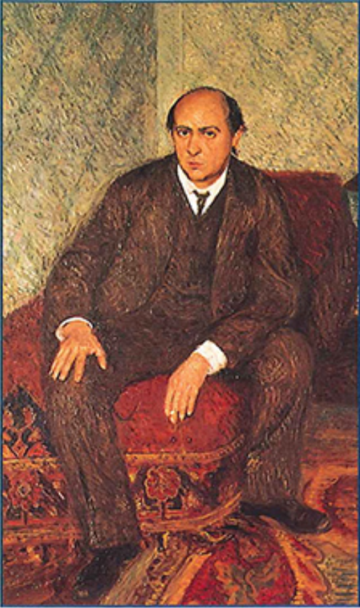
However, he refused the same solution as Stravinsky. His response was to formalise the collapse: twelve-tone technique dissolved the hierarchy of pitches entirely, treating all twelve notes of the chromatic scale as genuinely equal, with no single pitch having gravitational priority over any other. What he gained, or intended to gain, was a new kind of coherence — not tonal coherence but serial coherence, where the logic came from the ordering and transformation of the row rather than from the pull of dominant to tonic. The harmony was still there in the sense that notes sounded simultaneously, but it was no longer functional. It was, in the terminology we've been using, entirely non-directional.
Schoenberg in his free atonal period produced Pierrot Lunaire, which is organised around tone colour, the expressionist distortion of vocal sound, and motivic cells that recur without tonal anchoring. Having dissolved pitch hierarchy, Schoenberg and Coltrane years after him found themselves working increasingly with what is left when pitch hierarchy goes — texture, timbre, register, duration, the raw physical substance of sound itself.
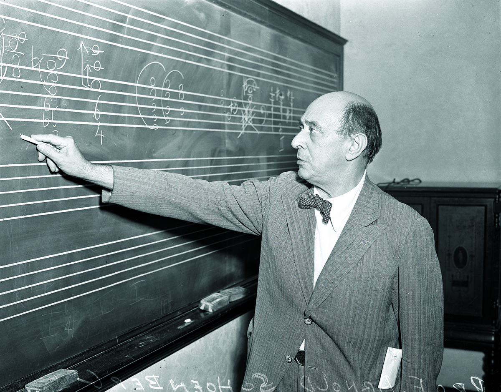
Neither Stravinsky nor Shepp went through this process of harmonic self-exhaustion. Both arrived at their rhythmic emphasis not by following harmonic logic to its terminus but by stepping off the harmonic track at an earlier point and asking a different question. Stravinsky never pushed tonality to its limits the way Schoenberg did — he simply observed that tonality had become the wrong tool for what he wanted to do and reached for rhythm instead. Shepp observed that the harmonic language of jazz was a culturally freighted convention and reached for African rhythm as an alternative foundation. Neither of them needed to exhaust the harmonic system first. They departed from it consciously rather than being expelled from it by its own logic.
Think of it like this. Schoenberg and Coltrane are both figures who pushed the existing system until it broke and discovered freedom on the other side of the break — freedom that felt earned because it came at the end of an exhaustive process of working through every possibility the system contained. Stravinsky and Shepp are both figures who saw the break coming, or saw the system as insufficient from the start, and chose a different path without needing to reach the breaking point.
This leads us onto Steve Coleman who has done more than any to push Shepp's vision of jazz forward and in his own unique direction. This is Coleman:
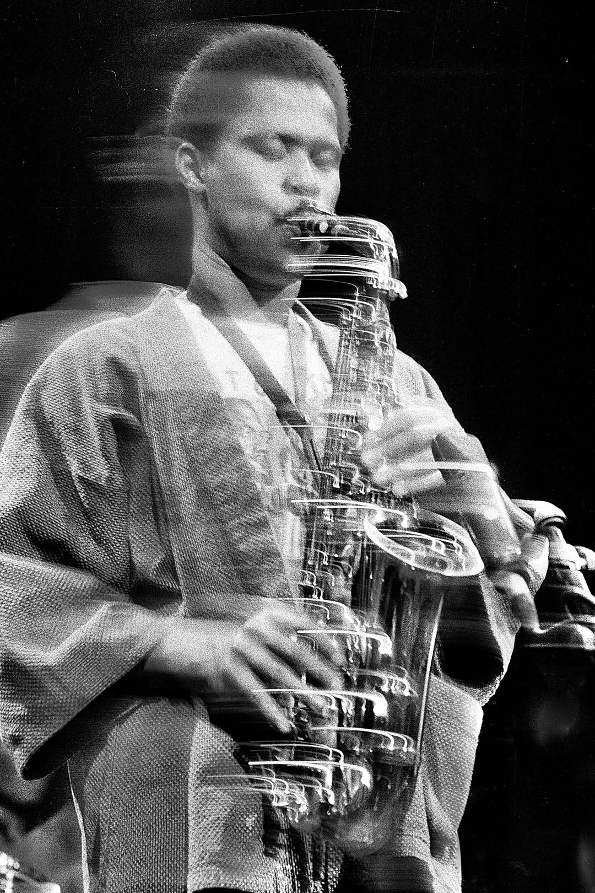
Like Shepp, he is challenging the same underlying assumption, which is that Western European functional harmony is the natural governing principle of jazz.
But out of this idea, Coleman developed an entire new philosophy which has captured the minds of so many. M-Base, short for Macro-Basic Array of Structured Extemporization, is a wholly new way of thinking about creative music.
Coleman coined the term in Brooklyn in the mid-1980s in collaboration with a loose collective of young Black musicians including Greg Osby, Cassandra Wilson, Geri Allen and Graham Haynes. They all shared the view that the music they had inherited, and the theory used to describe it, was being analysed through the wrong end of the telescope. Here's a great documentary that gives you a sense of that time:
Coleman has argued that much of what is being accomplished in jazz can be seen more clearly if we take into account the perspective of the African Diaspora, rather than having discussions primarily about harmonic structure — that the rhythmic relationships in the music are far more subtle than what is happening harmonically. So what we see in this project are distinct echos of Shepp and his dream 20 years before.
Coleman's argument, shaped by research trips to Ghana, Cuba and South India and by deep engagement with African drumming traditions, is that this framing accepts a premise that the music never actually endorsed. Almost all of the various strains of Black music have a common bond that has mostly to do with the way the juxtaposition of time, space, sound and pitch are perceived by people of African origin.
And this bond, thinks Coleman, is primarily rhythmic. The groove, the clave, the polyrhythmic layering of multiple independent time cycles — these are not decoration applied to harmonic structures. They are the structures.
Coleman developed a melodic theory in 1978 called the Symmetrical Movement Concept that deals with tonal centres in terms of spatial geometry rather than tonic-based tonality — what he borrows from the theorist Ernst Levy as the difference between Telluric Gravity, which produces the familiar gravitational pull of the dominant toward the tonic, and Absolute Conception, which produces spatial relationships between pitch centres without one having authority over another. This is, interestingly, not so far from Shorter's harmonic world — but Coleman arrives at it via geometry and symmetry rather than via colour and atmosphere, and crucially he ties it to rhythm in a way Shorter never did.
At the same time as Coleman, another musician called Brad Mehldau is taking jazz in the opposite direction. Here is Mehldau:
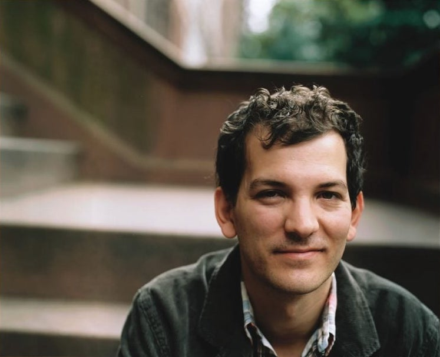
Mehldau is linking jazz back with European music. He is known for his playing of improvised counterpoint — he often plays a separate melody with each hand. Here is a piece from his album After Bach:
Although occasionally evident in jazz piano prior to Mehldau in players like Art Tatum and Lennie Tristano, devices such as counterpoint and multiple simultaneous layers were rarely employed by jazz pianists. In this sense, it is something that has almost no precedent in mainstream jazz piano.
Because of the contrapuntal idiosyncrasies that define him as a composer and performer, Mehldau's work is subjectible to a very strange analytical technique from European classical music theory known as Schenkerian analysis, a tool which was originally developed for the analysis of Bach and Brahms. Here is an old photo of Heinrich Schenker:
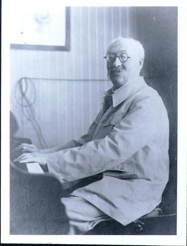
Schenkerian analysis is a strange classical method for making sense of tonal music by reducing it to its underlying contrapuntal structure (Ursatz) through successive layers: foreground, middleground, and background. Mehldau employs melodically directed motion and large-scale forms of goal-orientation that correspond to beginning-middle-end schemes fundamental to Schenkerian theory.
In other words, when you analyse what Mehldau is actually doing across the span of an improvisation, you find something that looks structurally like a Bach two-part invention or a Brahms intermezzo — a long-range tonal plan, inner voices pulling toward each other across many bars, dissonances carefully prepared and resolved over extended time. Mehldau himself has said that his harmonic and melodic inspiration comes simultaneously from jazz, pop and classical music, and that in classical music there is a compositional elaboration you rarely find in jazz.
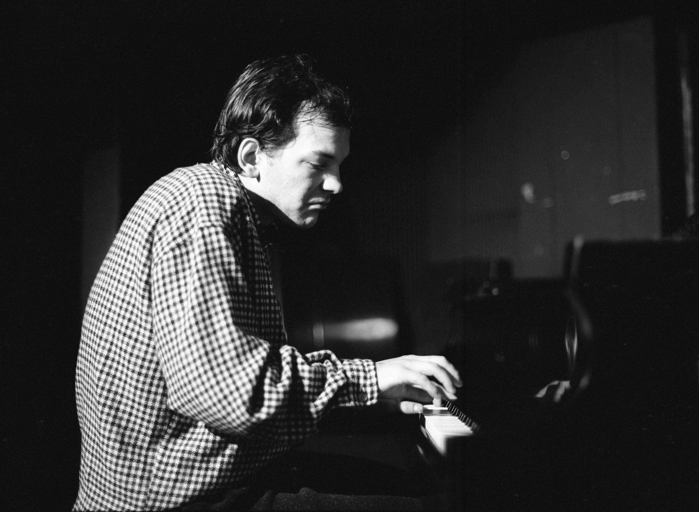
But Mehldau might have therefore missed the point entirely. Jazz since Coltrane has been devoted explicitly to the project of ridding itself of European music. It is therefore unsurprising that there has been a lack of developed counterpoint techniques, a gap which he found he could surprisingly still fill, over 100 years after the inception of jazz.
Under Mehldau's influence, jazz has now arrived at an understanding of harmony that Bach had already encoded three centuries earlier: that the most sophisticated harmony is linear, and that chords are what happens when independent voices occupy the same moment in time. And this is exactly what Coltrane and Shepp had worried about all those years earlier.
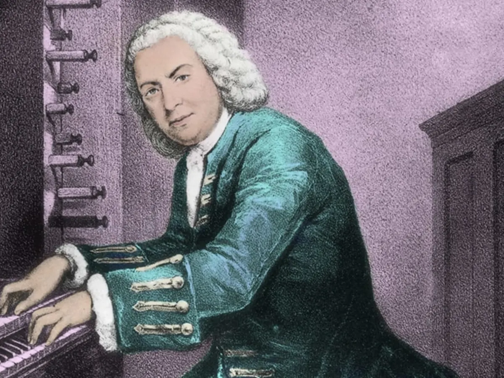
The two of them had come to believe that European harmony had its own internal logic and that, if pushed any further than Coltrane had managed to push it, it would find its way straight back to the old conservative forms of Europe like those of Bach and Brahms. This would tug jazz music into the conservative past of Europe in a way Shepp was desperate the African should try their best to avoid. The way to do this, they thought, was to abandon European harmony. And the fact that a European like Mehldau is now taking jazz into Bach and Brahms territory again seems to shows that Shepp was right to abandon ship.
Shepp's argument was not primarily an argument about where harmonic logic would eventually lead. It was an argument about cultural ownership and the politics of musical convention. By steering jazz toward Bach and Brahms, Mehldau is helping to validate Shepp's suspicion that European harmonic thinking has a centripetal pull toward its own classical tradition.
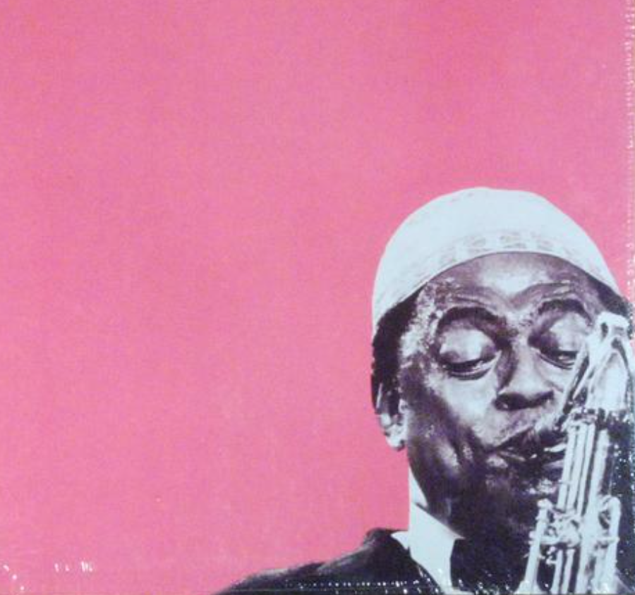
Rather than advance Coltrane's developments of harmony, Mehldau is invoking the cultural authority of European music to define a vision of what the future of sophistication in jazz means, crowding out the African tradition's own standards of sophistication and replacing them with the techniques of the ghosts of the baroque.
Mehldau is now held up as a visionary and guide to the future of jazz. But if, according to him, the most rigorous expression of the genre is now to be found in the very linear counterpoint from which European harmony had originally developed, Shepp was right to be wary.
Teaching these ideas of counterpoint applied to jazz is a man called Dariusz Terefenko. Here is a picture of him looking scientific:
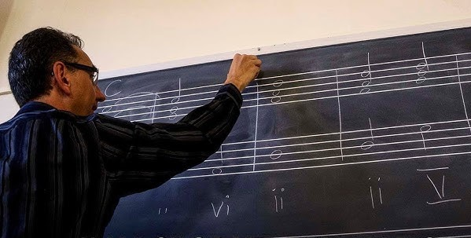
At the same time, people appear to have given up on M-Base after finally admitting they don't understand what it's really about. But this returns us to ideas of the Minton Group. Coleman has, for now, achieved a kind of immunity against distortion by once again making his music too complicated for the European to understand. And this leads us to where we are now in jazz music today. There is a split between one group that wants to dive into an historical underworld to undercover techniques which can push jazz forward. And another group, including Coleman and his followers, are still holding tight to vision of jazz Shepp once dreamt up.
But perhaps the strangest thing of all is that, having convinced Coltrane and a whole generation after him of his philosophy of music, Shepp begins to move backward again. Beginning in the late 1970s, Shepp's career began to gravitate towards blues, ballads, sprituals and tributes to Parker and Bechet. Many have read this as retreat, as if Shepp had run out of steam for the avant-garde and retreated into nostagia.
Whether or not Shepp gave up on his ideals, Coleman has rediscovered them and taken up the mantle. However, it may be too late for his followers to enjoy a Minton's-style insulation from commodification as avant-garde styles, at least in London where I live, are being commodified to the high hills and gentrifed in sceney venues like Cafe OTO and Avalon Cafe.
And in New York, the influence of Brad Mehldau seems to represent a feeling that jazz without classical origins is simply not enough. Buried with their heads in European classical techniques, they hope to search for a better music.
The future for jazz in both cities feels very uncertain right now.